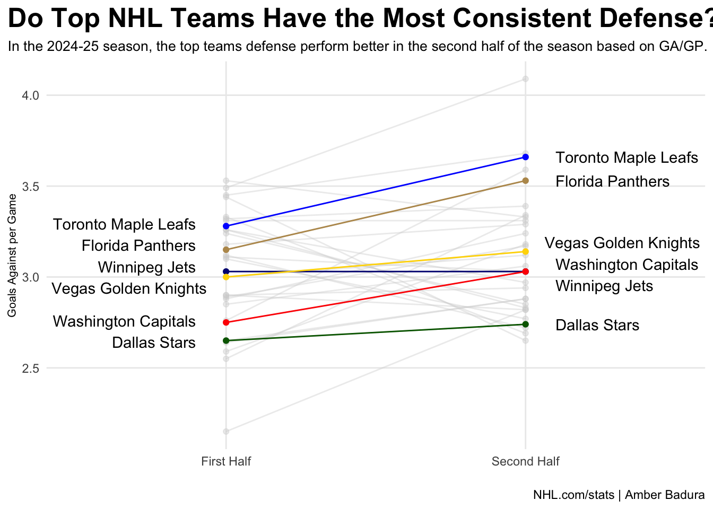

library(tidyverse)── Attaching core tidyverse packages ──────────────────────── tidyverse 2.0.0 ──
✔ dplyr 1.1.4 ✔ readr 2.1.6
✔ forcats 1.0.1 ✔ stringr 1.6.0
✔ ggplot2 4.0.1 ✔ tibble 3.3.1
✔ lubridate 1.9.4 ✔ tidyr 1.3.2
✔ purrr 1.2.1
── Conflicts ────────────────────────────────────────── tidyverse_conflicts() ──
✖ dplyr::filter() masks stats::filter()
✖ dplyr::lag() masks stats::lag()
ℹ Use the conflicted package (<http://conflicted.r-lib.org/>) to force all conflicts to become errorslibrary(ggrepel)
library(ggnewscale)
performance_1 <- read_csv ("first half - Sheet1.csv") |> mutate(TimePeriod = "First Half")Rows: 32 Columns: 23
── Column specification ────────────────────────────────────────────────────────
Delimiter: ","
chr (2): Team, T
dbl (21): GP, W, L, OT, P, P%, RW, ROW, S/O Win, GF, GA, GF/GP, GA/GP, SO, P...
ℹ Use `spec()` to retrieve the full column specification for this data.
ℹ Specify the column types or set `show_col_types = FALSE` to quiet this message.performance_2 <- read_csv("second half - Sheet1.csv") |> mutate(TimePeriod = "Second Half")Rows: 32 Columns: 23
── Column specification ────────────────────────────────────────────────────────
Delimiter: ","
chr (2): Team, T
dbl (21): GP, W, L, OT, P, P%, RW, ROW, S/O Win, GF, GA, GF/GP, GA/GP, SO, P...
ℹ Use `spec()` to retrieve the full column specification for this data.
ℹ Specify the column types or set `show_col_types = FALSE` to quiet this message.performance <- bind_rows(performance_1, performance_2)
performance$TimePeriod <- factor(performance$TimePeriod, levels=c("First Half", "Second Half"))
fp <- performance |> filter(Team == "Florida Panthers")
wj <- performance |> filter(Team == "Winnipeg Jets")
wc <- performance |> filter(Team == "Washington Capitals")
vk <- performance |> filter(Team == "Vegas Golden Knights")
tm <- performance |> filter(Team == "Toronto Maple Leafs")
ds <- performance |> filter(Team == "Dallas Stars")
teams <- bind_rows(fp, wj, wc, vk, tm, ds)
ggplot() +
geom_line(data=performance, aes(x=TimePeriod, y=`GA/GP`, group = Team), color="lightgrey", alpha= .4) +
geom_point(data=performance, aes(x=TimePeriod, y=`GA/GP`), color="lightgrey", alpha= .4) +
geom_line(data=fp, aes(x=TimePeriod, y=`GA/GP`, group = Team), color="#B9975B") +
geom_point(data=fp, aes(x=TimePeriod, y=`GA/GP`), color="#B9975B") +
geom_line(data=wj, aes(x=TimePeriod, y=`GA/GP`, group = Team), color="navy") +
geom_point(data=wj, aes(x=TimePeriod, y=`GA/GP`), color="navy") +
geom_line(data=wc, aes(x=TimePeriod, y=`GA/GP`, group = Team), color="red") +
geom_point(data=wc, aes(x=TimePeriod, y=`GA/GP`), color="red") +
geom_line(data=vk, aes(x=TimePeriod, y=`GA/GP`, group = Team), color="gold") +
geom_point(data=vk, aes(x=TimePeriod, y=`GA/GP`), color="gold") +
geom_line(data=tm, aes(x=TimePeriod, y=`GA/GP`, group = Team), color="blue") +
geom_point(data=tm, aes(x=TimePeriod, y=`GA/GP`), color="blue") +
geom_line(data=ds, aes(x=TimePeriod, y=`GA/GP`, group = Team), color="darkgreen") +
geom_point(data=ds, aes(x=TimePeriod, y=`GA/GP`), color="darkgreen") +
geom_text_repel(data=teams |> filter(TimePeriod == "First Half"), aes(x= TimePeriod, y=`GA/GP`, group=Team, label=Team), direction = "y", nudge_x = -0.1, hjust = 1, segment.color = NA) +
geom_text_repel(data=teams |> filter(TimePeriod == "Second Half"), aes(x= TimePeriod, y=`GA/GP`, group=Team, label=Team), direction = "y", nudge_x = 0.1, hjust = 0, segment.color = NA) +
labs(
x="",
y="Goals Against per Game",
title="Do Top NHL Teams Have the Most Consistent Defense?",
subtitle="In the 2024-25 season, the top teams defense perform better in the second half of the season based on GA/GP. ",
caption="NHL.com/stats | Amber Badura"
) +
theme_minimal() +
theme(
plot.title = element_text(size = 19, face = "bold"),
axis.title = element_text(size = 8),
plot.subtitle = element_text(size=10),
panel.grid.minor = element_blank(),
plot.title.position = "plot"
) 